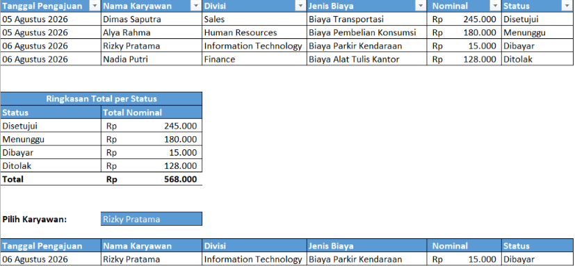

Staff Administrasi & Data
Administrasi rapi, didukung analisis data dan formula Excel yang efisien
Terbiasa menyusun dokumen dan data secara rapi, mulai dari mengelola data dengan Excel (Pivot Table, formula) hingga membangun dashboard visual untuk mendukung pengambilan keputusan. Saya juga terbiasa memanfaatkan AI generatif untuk membantu menentukan rumus dan langkah pengerjaan yang tepat sebelum diterapkan langsung di Excel.
Unduh CV
Tentang Saya
Pengalaman Kerja
Menjalani Praktik Kerja Lapangan selama 2 bulan di Bapenda NTB, membantu perbaikan sistem kepegawaian dengan memasukkan ratusan data pegawai dari Excel ke sistem web bersama tim, serta turut menyampaikan laporan progres dalam presentasi mingguan.
Pengalaman Akademik
Menyusun dan mengelola dataset pendukung Tugas Akhir (117 entri) menggunakan Excel dengan kategorisasi data melalui Data Validation, menyusun jurnal KKN menggunakan Word, serta mengelola data acara sebagai divisi acara KKN.
Cara Kerja dengan AI
Terbiasa memanfaatkan AI Generatif & Prompt Engineering untuk riset cepat menentukan rumus dan langkah penyelesaian tugas administratif sebelum diterapkan secara manual — memastikan hasil tetap terverifikasi dan akurat.
Latar Belakang
Berlatar belakang Teknik Informatika, saya membawa pola pikir logis dan cara kerja terstruktur ke pekerjaan administrasi — seperti yang terlihat dari pengelolaan data yang rapi dan pendekatan sistematis dalam memanfaatkan AI untuk menyelesaikan tugas.
🎓 Pendidikan
Teknik Informatika — Universitas Mataram
2022 – 2026 · IPK 3,49
Keahlian


 Power Point
Power Point
 Google Sheets
Google Sheets
 Google Docs
Google Docs
 Google Drive
Google Drive
 Canva
Canva
 Gemini
Gemini

 Claude
Claude
Proyek

Dashboard Anggaran Wisuda
Deskripsi singkat proyek: apa yang dikerjakan, konteksnya, dan hasil/dampaknya.

Rekap Cuti & Izin Karyawan
Sistem pencatatan dan pengelolaan cuti karyawan berbasis Google Form dan Google Sheets, dirancang untuk menggantikan proses pengajuan cuti manual (kertas/WhatsApp) yang rawan kesalahan pencatatan. Sistem ini mencakup alur pengajuan, verifikasi dokumen pendukung, serta perhitungan sisa cuti otomatis per karyawan menggunakan formula lintas sheet.

Database & Monitoring Reimbursement Karyawan
Studi kasus administrasi: memverifikasi data pengajuan, menyusun form dan database reimbursement, menghitung ringkasan status dengan SUMIF, serta membuat monitoring per karyawan menggunakan dropdown dan FILTER.

Cleaning Dataset Tanaman Tugas Akhir
Membersihkan 100+ entri data tanaman untuk Tugas Akhir, menangani duplikat baik yang identik maupun semantik (nama lokal vs nama ilmiah yang merujuk tanaman sama), data kosong, dan format tidak konsisten. Nama ilmiah diriset dan diverifikasi manual, lalu dikategorikan menggunakan Data Validation.